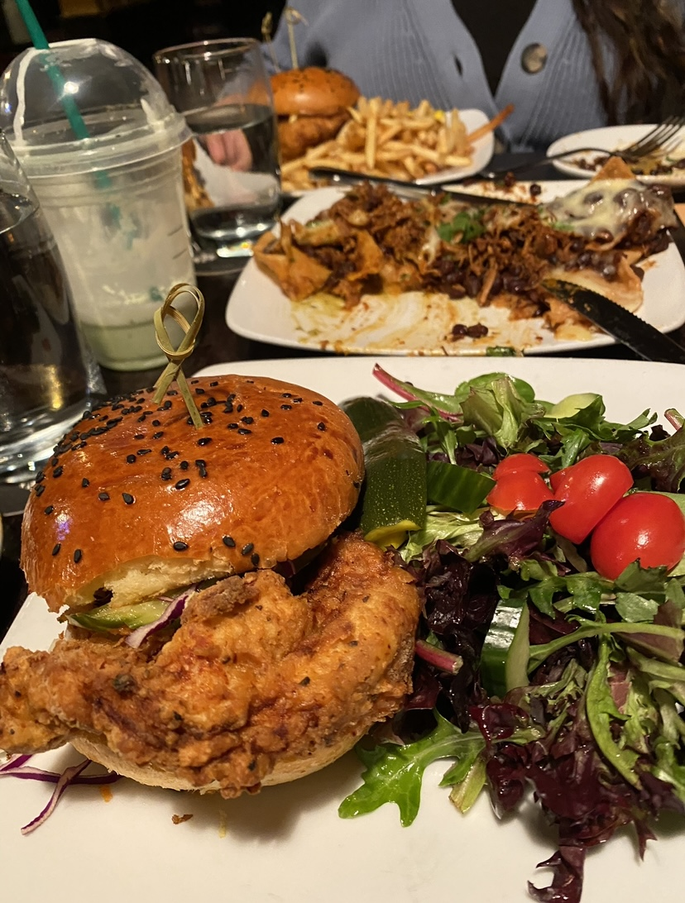

Gallery
My two favorite things in the world are traveling and food. Traveling is a way for me to get to know new places, make fun memories, and a way to reset my body and mind from school. I love food because truly provides me with joy and happiness. Food has brought my family and friends together, and has been a way to meet new people.
